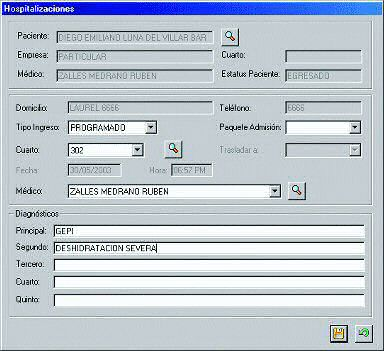
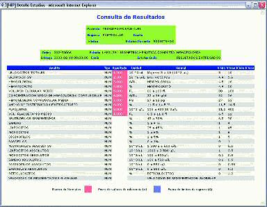
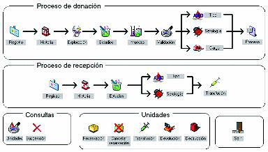

xHosp - Sistema integral para la administración hospitalaria
xHosp es un sistema de información hospitalario para el apoyo operacional y el control administrativo integral de un hospital o clínica.
Permite el control administrativo de pacientes hospitalizados durante su internamiento, de pacientes de corta estancia o ambulatorios así como de pacientes externos a una unidad hospitalaria.
Ingreso de la información relevante del paciente así como la asignación y control de cuartos dentro del hospital.
Controla el acceso del paciente a las diferentes áreas hospitalarias registrando las prestaciones otorgadas al paciente directamente en el servicio donde se otorgaron.
Administra la programación y asignación de quirófanos así como el registro de las cirugías (tiempos, suministros y medicamentos).
Incluye el control de farmacias para llevar a cabo la entrada de medicamentos y suministros así como el despacho de estos artículos a pacientes, hacia las diferentes áreas hospitalarias o la transferencia de artículos entre las distintas farmacias dentro del hospital.
Controla el egreso del paciente registrando el tipo de egreso y sus diagnósticos.
Hace posible llevar el control de las transferencias o movimientos de los pacientes entre las diferentes áreas de hospitalización.
Incluye el control electrónico del expediente médico: diagnósticos, estudios, movimiento del paciente dentro del hospital, notas médicas, etc.
Por medio del sistema se realiza la facturación de pacientes tomando en cuenta en su caso, las características del convenio que se tenga con las diferentes empresas o seguros, así como también el manejo de casos especiales.
Controla en forma completa y detallada la cobranza a las empresas con convenios.
Permite la explotación de información médica con fines estadísticos o de la información administrativa con fines de control.
Por medio de interfaces puede realizarse la transferencia de información administrativa hacia los sistemas contables de la compañía.
xHosp fue diseñado desde su inicio como un sistema modular y escalable que puede ser instalado en la mayoría de las instituciones hospitalarias desde clínicas regionales pequeñas hasta los grandes centro médicos institucionales o privados.
Características Generales
- Aprovecha todas las ventajas de una aplicación diseñada y desarrollada para Windows: interfaz de usuario gráfica y amigable, capacidad de compartir la información con otras aplicaciones de Windows como Word, Excel o Access entre otras.
- Permite la utilización de prácticamente cualquier base de datos para el almacenamiento de la información de pacientes y resultados.
Representa una nueva generación de sistemas de información hospitalarios donde se han integrado la experiencia de numerosos profesionales de la salud así como expertos en tecnología de información para obtener un sistema que es flexible, económico y fácilmente expandible.
xHosp es un producto desarrollado totalmente en México. El equipo de desarrollo de xHosp constantemente está generando nuevas versiones del software que contienen funciones adicionales de acuerdo con las sugerencias y necesidades de nuestros clientes.
Admisión de pacientes
- Registro de pacientes hospitalizados, ambulatorios, de urgencias y externos
- Información demográfica del paciente
- Información sobre familiares o contactos
- Impresión de comprobantes, contratos y pagarés
- Actualización del expediente electrónico comenzando por diagnósticos de ingreso

Transferencia y egreso de pacientes
- Transferencia de pacientes entre las diferentes áreas de hospitalización
- Egreso del paciente de la institución por alta médica, traslado o defunción
- Para cada movimiento se genera un registro de seguimiento
- Manejo de diagnósticos de egreso
Censo y control de cuartos
- Inventario actualizado de los cuartos
- Bloqueo de cuartos para intendencia o mantenimiento
- Rápido acceso a la consulta de cuartos disponibles por servicio, tipo de cuarto y tipo de cama
Cargo automático de cuartos
- Ejecución automática a la hora límite configurada por el usuario
- Cargo de cuartos y cargos adicionales configurables por tipo de cuarto
Areas de atención a hospitalizados
- Solicitud de órdenes de laboratorio, imagenología y medicamentos desde el piso
- Consulta de resultados de estudios y estado de órdenes pendientes
Programación y control de quirófanos
- Planeación del uso de los quirófanos
- Registro del material y recursos utilizados durante la intervención
- Registro de la información del procedimiento quirúrgico, recursos humanos y servicios relacionados
- Actualización del expediente médico
Laboratorio de análisis clínicos
- Control integral del laboratorio
- Manejo de fechas de entrega
- Etiquetas con código de barras
- Resultados numéricos y de anatomía patológica
- Valores de referencia por sexo y edad
- Control de envío de pruebas especiales (maquila)
- Control de calidad interno y externo
- Interfaces con equipos clínicos automatizados
- Actualización del expediente médico
- Consulta de resultados por Internet

Farmacias
- Control del inventario de medicamentos y suministros médicos
- Generación automática de órdenes de compra
- Métodos eficientes de compra
- Despacho a pacientes, áreas de servicio o transferencia entre farmacias
- Control de lotes y fechas de vencimiento
- Métodos de costeo configurables: UEPS, costo promedio, etc.
- Control centralizado de las existencias
- Inventario físico de artículos
- Interfaz con el sistema contable
Facturación y Cobranzas
- Considera las características del convenio como descuentos y créditos
- Facturación configurable para un número ilimitado de razones sociales
- Cobro de coaseguros y deducibles
- Refacturación expedita
- Controla en forma completa y detallada la cobranza
- Integración de facturas para cobro
- Fechas de revisión y contrarecibos
- Recepción de pagos
- Notas de cargo y crédito
- Pronósticos de cobranzas
- Control de la antigüedad de saldos
- Interfaz con el sistema contable
Caja General (Pagos)
- Pagos parciales o totales
- Diferentes formas de pago
- Control detallado de saldos por paciente
- Manejo de múltiples cajas
- Turnos de caja configurables
- Interfaz con el sistema contable
Consulta Externa
- Actualización de la información de tratamientos en consulta externa
- Padecimientos anteriores
- Perfil de medicamentos
- Exámenes diagnósticos
- Resultados de consultas
- Historia médica y examen físico
- Solicitud de estudios
- Reservación de quirófanos
- Control de citas
- Actualización del expediente electrónico
Gabinete de Imagenología
- Generación de órdenes de trabajo de imagenología
- Control de citas por equipo o recurso
- Control de placas y material utilizado
- Interpretación médica del estudio
- Documentos predefinidos configurables por el usuario
- Actualización del expediente electrónico
Banco de Sangre
- Manejo de donadores y receptores
- Procesos de transfusión, validación, cesión, reservación, devolución y destrucción de unidades
- Lleva de la mano al usuario a través de las diferentes etapas de la donación por medio de un flujo de trabajo (workflow)
- Envío automático de solicitudes de estudios al laboratorio
- Interfaces con equipos automatizados
- Imprime etiquetas con código de barras para los tubos de muestras y las bolsas de unidades
- Control de inventarios para el manejo de suministros
- Suspensión temporal o definitiva de donadores
- Carga y descarga de unidades
- Control de procesos de conversión, irradiación, filtrado y lavado
- Control de calidad interno con gráficas de Levy-Jennings
- Bitácora de todas las transacciones
- Actualización del expediente electrónico

Interfaz Contable
- Transferencia de información del sistema hospitalario hacia los sistemas contables en línea o por lotes
- Facturación
- Cobranza a convenios
- Ingresos diarios
- Entradas y salidas de medicamentos y suministros
- Cuentas contables y métodos de transferencia configurables por el usuario
Administración
- Seguridad de usuarios a 3 niveles
- Aumento automático de precios
- Actualización de catálogos
- Configuración del sistema
- Reportes administrativos y estadísticas médicas
Obtenga esta página en formato PDF: 
Observe una demostración en línea
Si requiere más información por favor utilice alguna de nuestras formas de contacto
Vea también:
- xLab - Sistema para el control y operación de laboratorios clínicos
- xBlood - Sistema para el manejo de bancos de sangre
- xRay - Sistema para el control y operación de gabinetes de rayos X e imagenología